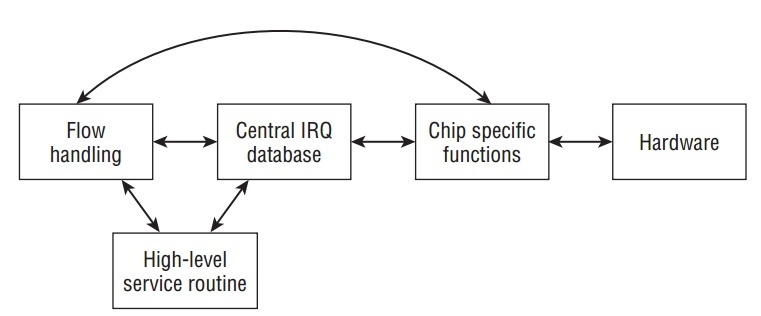
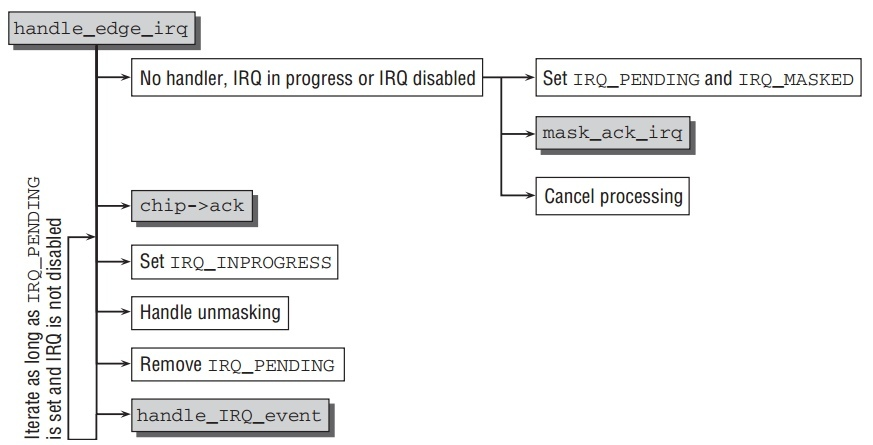
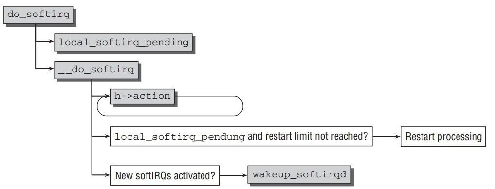

Hardware/Software IRQs, tasklets and wait queues
Table of Contents
Interrupts
Linux中2种不同的中断:
- Hardware Interrupts: 又系统和连接的外围设备做产生.
- SoftIRQs: 在kernel本身被用来有效实现延迟的活动.
Interrupt Types
总的来说,中断类型可以被分为2类:
- Synchronous Interrupts 和 Exceptions: 由CPU自身产生,并用户当前运行的程序.Exceptions 由许多原因触发:在运行时产生程序错误(经典例子是除 0).或异常情况发生,处理器需要外部的帮助解决它.
- Asynchronous interrupts: 是由外围设备产生的经典中断,可以在任何时候发生.与synchronous interrupts不同, asynchronous interrupts不和特定进程相关.它能在任何时候发生(中断打开情况下),无论当前系统运行什么活动.
如果CPU当前没有在kernel模式下,它会从用户模式跳转到内核模式.然后它执行一个特定的程序叫做 interrupt service routine(ISR) 或 interrupt handler.
Hardware IRQs
中断其实不能直接被处理器外部设备触发,而它被请求是在一个叫interrupt controller 的标准元件的帮助下.所以外部设备只能请求中断通过此元件,这样的请求被熟知为IRQs或interrupt requests.
Processing Interrupts
一旦CPU被通知有中断,它需要转到相应的软件程序去进一步处理.因为每个 interrupt和每个exception有为一个编号,kernel使用一张表来包含指向处理函数的指针.如下图:

- Entry and Exit Tasks
如下图,interrupt处理被分为3部分.首先,适合处理函数能运行的环境被设置好; 然后处理函数本身被调用;最后系统恢复到interrupt前的状态.

进入和离开中断处理程序确保处理器从用户模式转到kernel模式.进入代码中关键部分是从用户模式的stack转化到kernel模式的stack,离开代码相反.所以必须保存当前寄存器的值,平台相关的寄存器list结构
pt_regs中列出了所有在 kernel模式下会改变的寄存器.离开代码中kernel检查是否:
- 调度器需要选择一个新的进程来取代旧的进程.
- 有需要传递给进程的信号.
因为C和汇编语言的交互需要,特别两者数据交换,这些处理代码在
arch/arch/kernel/entry.S中.
Data Structures
管理IRQs中心是一张每个条目就是一个IRQ的全局的数组.因为数组位置和中断编号是一致的.所以很容易通过特定IRQ确定条目位置: IRQ 0的位置是0如此.数组定义如下:
// kernel/irq/handle.c struct irq_desc irq_desc[NR_IRQS] __cacheline_aligned_in_smp = { [0 ... NR_IRQS-1] = { .status = IRQ_DISABLED, .chip = &no_irq_chip, .handle_irq = handle_bad_irq, .depth = 1, // ... } };
尽管使用架构不相关的数据类型,但是最大支持IRQs个数由平台特定定值
NR_IRQS 决定.对于大多数架构来说,这个定值被定义在处理器特定的头文件
include/asm-arch/irq.h 中.初始,所有中断条目没有安装指定的处理函数,使用 handle_bad_irq 作为处理函数,它仅仅确认终端.
Kernel的IRQ处理子系统包含3个抽象层,如下图:

- High-Level Interrupt Service Routines (ISRs): 进行由设备驱动中断引发的必要工作.
- Interrupt Flow Handling: 处理中断不同类型如边缘和电平触发间的差异.
- Chip-Level Hardware Encapsulation: 直接与底层产生中断的硬件交互.
继续分析代码,表示IRQ描述符的结构定义如下:
// <irq.h> struct irq_desc { irq_flow_handler_t handle_irq; struct irq_chip *chip; void *handler_data; void *chip_data; struct irqaction *action; /* IRQ action list */ unsigned int status; /* IRQ status */ unsigned int depth; /* nested irq disables */ unsigned int irq_count; /* For detecting broken IRQs */ unsigned int irqs_unhandled; ... const char *name; } ____cacheline_internodealigned_in_smp;
- flow层的IRQ处理函数由
handle_irq提供.handler_data可以指向处理特定的数据.handle_irq被调用当中断发生时.这个函数并负责使用chip提供的控制特定方法来完成必要的底层操作来进行中断处理. action提供一串当中断发生时需要被执行的动作.- 芯片特定的处理封装在
chip中.一个特殊的数据结构被引入,chip_data指向相应使用的数据. name指定/proc/interrupts中显示的名字.
其中 depth 有2个功能,用来指示IRQ线是否打开或关闭,并且记录被关闭的次数. 一个正数表示被关闭.而0表示被打开.为什么正数被使用来关闭IRQs?因为每次有代码关闭中断, depth 作为计数加1, 每次中断被再次打开, 计数减1.
IRQ能改变它的状态不仅在初始化时,而且可以在运行时. status 描述当前状态. <irq.h> 定义了许多定值来描述当前IRQ线的状态.
IRQ_DISABLEDis used for an IRQ line disabled by a device driver. It instructs the kernel not to enter the handler.- During execution of an IRQ handler the state is set to
IRQ_INPROGRESS.As withIRQ_DISABLED, this prohibits the remaining kernel code from executing the handler. IRQ_PENDINGis active when the CPU has noticed an interrupt but has not yet executed the corresponding handler.IRQ_MASKEDis required to properly handle interrupts that occur during interrupt processing;IRQ_PER_CPUis set when an IRQ can occur on a single CPU only. (On SMP systems this renders several protection mechanisms against concurrent accesses superfluous.)- IRQLEVELis used on Alpha and PowerPC to differentiate level-triggered and edge-triggered
IRQs.
❑ IRQREPLAYmeans that the IRQ has been disabled but a previous interrupt has not yet been
acknowledged.
❑ IRQAUTODETECTandIRQWAITINGare used for the automatic detection and configuration of
IRQs. I will not discuss this in more detail, but mention that the respective code is located in
kernel/irq/autoprobe.c.
❑ IRQNOREQUESTis set if the IRQ can be shared between devices and must thus not be exclusively
requested by a single device.

Interrupt Flow Handling


Initializing and Reserving IRQs

Servicing IRQs


Software interrupts
Starting SoftIRQ Processing

The SoftIRQ Daemon
Tasklets
Generating Tasklets
Registering Tasklets
Executing Tasklets
Example
Wait queues and completions
Wait Queues
Completions
Work Queues
cc
[[./Files/